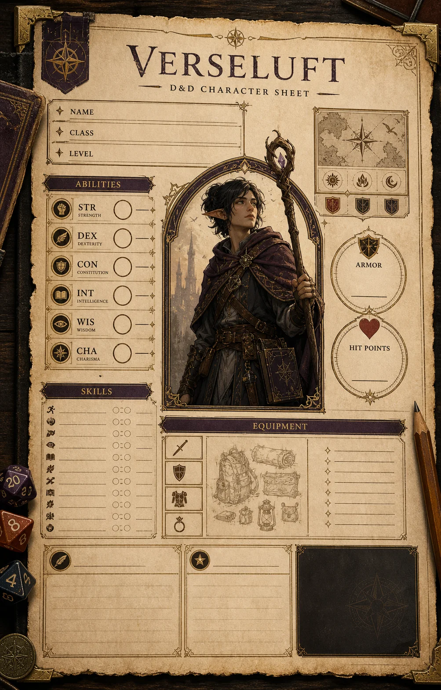
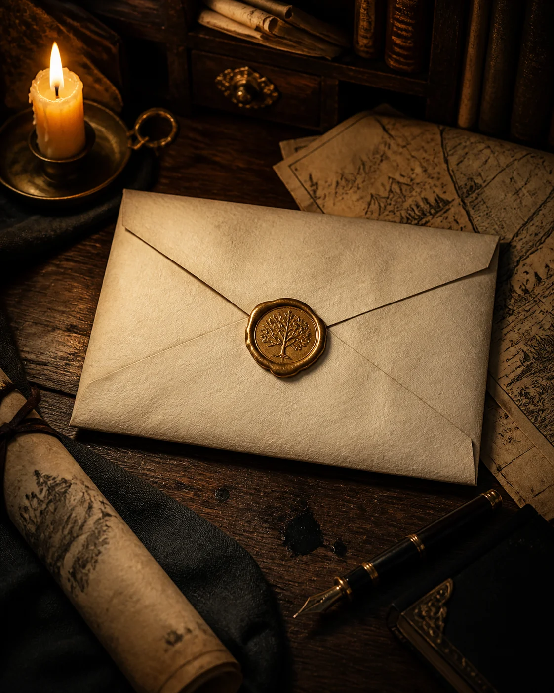

DM ADVICE
DM ADVICEEverything a DM Could Ever Need
A vast library of Plug-and-Play D&D content for Game Masters: adventures, NPCs, locations, settings, encounters, mechanics, and countless tools for building better games.
Scroll to explore
Less prep,
More play
Pick, plug, and play from:
+90Books of assets
+9kPages of content
+12kAssets
Inside a Verseluft book
Loading sample pages…
01–02 / --
Just started looking at this, its soooo good. This is great work. We need a part 2 with stat blocks for the members of gangs, this is great content.
About Verseluft
Expanding the
Collective imagination
We are a collective of indie DnD creators, DMs, and players, who make and share what we wish we had.
We want to add to the collective imagination of the D&D community—creating adventures, NPCs, settings, and ideas that give Game Masters more to work with and players more to discover.

01
Fairness
Fair value, fair practices, fair treatment.
02
Honesty
No empty promises. Just honest, transparent communication.
03
Reliability
Quality content you can count on, every time.
Up on Kickstarter
See what's brewing
Discover upcoming D&D adventures, campaign settings, and Dungeon Master resources from Verseluft. Explore the projects below and follow their journey to your table.
Live on Kickstarter
Upcoming
Explore upcoming books ↗D&D NEWS FROM VERSELUFTStay in touch,
Stay in touch,
Stay inspired.
New releases, project updates, and D&D tips and inspiration, delivered straight to your inbox. No Spam, we promise.

The Verseluft Blog
Tabletop Dispatches
Find inspiration for your D&D campaign with worldbuilding ideas, advice for Dungeon Masters, and a look behind the scenes of our books.
 01 / BEHIND THE SCENESWorldbuilding
01 / BEHIND THE SCENESWorldbuildingfor the table.Inside the making of a campaign world
Behind the scenes · 8 min read
D&D worldbuilding: what makes a setting playable?
A memorable D&D setting gives players reasons to explore. Look beyond maps and lore to the people, places, and unanswered questions that invite your group into the story.
Read the worldbuilding article ↗DM ADVICE MAKING GAMES
MAKING GAMESMaking games · 7 min read
Creating a D&D supplement: from idea to table
Explore the publishing process ↗ NEWS
NEWS